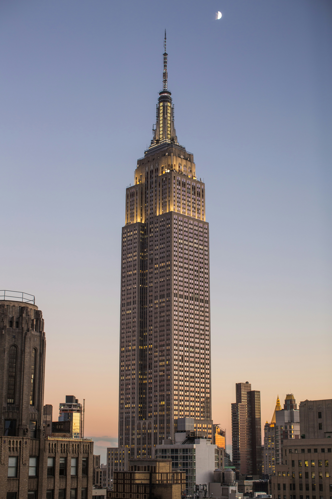

Empire State Building
Rockefeller Center is a large complex of 19 commercial buildings covering 22 acres (89,000 m2) between 48th and 51st streets in Midtown Manhattan. It was built by the Rockefeller family and was named after John D. Rockefeller Jr. It is famous for its ice-skating rink, the annual Christmas tree lighting, and the Radio City Music Hall. The complex also includes the GE Building, which is the headquarters of NBC and houses the studios of Saturday Night Live, The Tonight Show Starring Jimmy Fallon, and Late Night with Seth Meyers.The Empire State Building is a 102-story Art Deco skyscraper in Midtown Manhattan. It was designed by Shreve, Lamb & Harmon and completed in 1931. The building has a roof height of 1,250 feet (380 m) and stands a total of 1,454 feet (443.2 m) tall, including its antenna. The Empire State Building is currently the third-tallest completed skyscraper in the United States. It has been named as one of the Seven Wonders of the Modern World by the American Society of Civil Engineers. The building has two observation decks, one on the 86th floor and one on the 102nd floor, which offer panoramic views of the city.The Empire State Building is a 102-story Art Deco skyscraper in Midtown Manhattan. It was the world's tallest building for nearly four decades and is a popular tourist attraction.